/math-3ac6004d77c0cc0055e95c99b9dfd7e0.png "\sigma\,\!") ist die Varianz der Stichprobe
ist die Varianz der Stichprobe /math-6373accf16c083723e8abae2f5401af2.png "x\,\!") und
und Angenommen, ist die Varianz der Stichprobe und
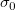
ist die hypothetische Varianz, dann testet diese Funktion die Hypothesen:/math-b62036202bb3c073a0f36d26144e465f.png "H_0:\sigma = \sigma_0\,\!") vs.
vs.
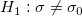
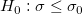
vs.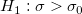
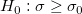
vs.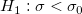
Zum Vergleichen der Varianz berechnen wir zuerst den Wert des Chi-Quadrats mit:
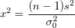
wobei /math-215891908ca120202db0e329cbccedcf.png "s^2\,\!") die Varianz der Stichprobe ist. Bei einem gegebenen Signifikanzniveau
die Varianz der Stichprobe ist. Bei einem gegebenen Signifikanzniveau /math-06f7895cd704b1cb0921cf98aec71926.png "\alpha\,\!") weisen wir die Nullhypothese
weisen wir die Nullhypothese /math-806277203dedea2ed8321f6cbd465a54.png "H_0\,\!") zurück, wenn:
zurück, wenn:
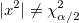
, für beidseitigen Test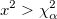
, für oberen Test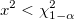
, für unteren TestUnd das Konfidenzintervall für die Stichprobenvarianz kann erzeugt werden als:
| Nullhypothese | Konfidenzintervall |
|---|---|
|
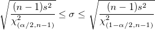 |
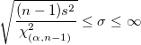 | |
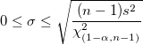 |